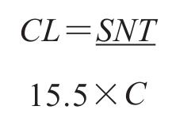

第42章 组合风险管理
我们在前一章提到过，长线趋势的不同阶段与获利的可能性之间有某种联系。现在已经有很多机械交易策略和交易系统来解决这个问题，但我们认为这并不是仅靠机械手段就能解决的。我们在前文介绍过一个判断投入资金量的方法，即根据一张综合了多只股票的图表所展示出的趋势共识来判断。（编者按：迈吉评价指数，即MEI）。一些交易策略是随着趋势的展开不断加码，还有一些策略的理念是沿趋势的反方向交易来平均成本，即在熊市中越跌越买，在牛市中越涨越抛。（第9版编者按：越跌越买是一条通向灾难的道路，而越涨越抛则需要高超的技巧。如果你不是专业的头寸交易者，请避免使用该交易策略。）
没有任何一个交易策略能够完全决定何时买，何时卖。本书的主要目的是向读者介绍个股的技术形态。如果我们能基于图表判断出何时买入，何时抛出，那么我们就已经掌握了成功交易的基本方法。但是，如果你的投资表现是净亏损，那么不论你如何在趋势的不同阶段调整投入资金量都没有意义，因为你的资金都会逐渐缩水，最终消失殆尽。（编者按：一直亏损的投资者应当给自己建立一个基准。比如说如果他的本金损失了50%，他就立即离场，将所有钱转入指数或公募基金，或交给专业的投资顾问打理。通常，交给顾问比放在公募基金里更好，但不论选哪个，都不可能比一直亏钱的投资者表现更差劲。第10版编者按：经历了2011年后，我觉得这也是有可能的。）
我们要解决的第一个问题就是学习各种技术工具、技术形态、支撑位、阻力位等的使用方法。价格水平、敏感性和保证金等因素都将在组合风险中得到综合考虑。我们之前已初步介绍过这些概念，所以你应该不难理解下文的分析。
你不会想要采取过于保守的做法，因为这样一来你就排除了几乎一切可以盈利的机会。如果你决定永远不做和长线趋势相反的交易，那么你就要在长时间的中线趋势中耐心等待，有时要等上好几周长线趋势才会重启。而且你自然会放弃所有的较弱信号和交会趋势线，并且避免在所有冲顶回落或恐慌高峰之后投入资金。毋庸多说，你可以不断调整你的谨慎程度，直至你的成功率接近90%。事实上，你甚至可以做到确保95%的投资决定都是正确的。但这种极端的保守主义也意味着你只在市场环境最优时，即每一个因素都必须是有利、清晰时才会交易。但这种完美的情况并不常见。这样你可能获利，但盈利水平太低，不值得你花费那么多的精力研究图表。即使不花费太多精力，也不承受过多风险，你也可以通过投资获得“过得去”的回报，因此如果要让你投入的精力有价值，你就必须要求更高的回报。
（编者按：上述“过得去的”回报可以通过投资国债及类似工具得到。债券投资者一般认为这是“无风险”投资，但我觉得这是在否认现实。大卫·德雷曼在《逆向投资战略》（Contrarian Investment Strategy）一书中写道，债券是一种不断贬值的资产，因为以商品计价的货币价值会不可遏止地下跌。）
为了最大地发挥图表的价值，你必须关注一些高杠杆的股票。这些股票能带来更大的获利机会，当然，损失风险也更大。比起买入“安全”的股票，然后一直持仓的投资者，你必须要积极承受更大的风险。
根据你对市场不同阶段的安全风险程度的判断，将你的组合风险控制在某个恒定的范围内，既可以避免过于谨慎，也可以保护你不受非理性繁荣的影响。更重要的是，如果你在操盘中始终采取这种风险管理策略，那么你不会无意识地过度交易。过度交易是比过度谨慎更常见的问题。即使根据你的策略计算，理论上的盈利百分比很高，但过度谨慎仍会让你陷入危险的境地。确定了一个组合风险战略后，你应当严格遵守该战略，仅在市场环境变化时做出必要的修改，这样你就不得不将交易控制在一个安全的频率上，且持续关注正在承受的风险。
42.1 过度交易：一个悖论
这就引出了另外一个问题。盈亏的百分比相同并不意味着你的盈亏金额也是相等的。这是个需要严肃对待的问题，因为投资者承受的风险越大，这个问题也就越严重（这个问题在任何情况中都可能存在，不过如果投资者已经提前做好交易计划，那么也不必太担心）。
为了更好地理解这个看似矛盾的说法，我们想象一个极端的情况。某个投资者在每一次投资时都倾尽所有，并且将预期盈利和损失的比例都定在100%。如果他第一次投资失败了，他就亏光了所有钱。他也不可能再把钱赚回来，因为他不可能在本金为零的情况下取得100%的回报。但如果他第一次投资成功了，然后将本金和赚得的利润再次投资，但第二次投资失败了，那么他还是分文不剩。不论他成功几次，一旦他有一次失败，他就彻底完了。
我们再假设一个不那么极端的情况。你不会采取要么本金翻倍，要么全部亏损的态度。我们假设你承受的风险水平是每笔交易40%的净损失或净盈利。如果你起初本金为1000美元，连续亏了10次，那么你就只剩6美元了。现在，假设接下来10次投资都成功了，那么10次亏损，10次盈利，每次盈亏的百分比都是40%，最终你的本金剩下不到100美元。而且盈亏顺序并不一定是按照先亏10次、再赚10次这个顺序，也可以是赚3次、亏4次、赚7次、再亏6次。结果是一样的。不论顺序如何，10次盈利和10次亏损后，你的本金都损失了90%以上。
另一方面，如果你以全部资金投资20次，10次净获利8%，10次净损失8%，那么20次投资后你只损失了很少一部分，还剩937美元。也就是说，你的期初本金还剩下94%。
现在，让我们假设连续10次交易都亏钱，虽然这看上去不太可能发生。事实上历史上曾有过一次，在道氏理论发出长线趋势反转信号和市场真正转向之间相隔了10个月的时间。当然，新趋势确立后，大市暴涨，不仅收复了前期的全部亏损，还产生了额外的盈利。但在那10个月期间，如果平均30天交易一次，你很有可能连续亏损10次，并被强制止损。这样一来，1000美元的本金最终只能剩下434美元。
重要的是，如果你继续以8%为盈亏标准交易的话，接下来的10次交易会让你的本金从434美元回到937美元。也就是说，以8%为标准交易，你可以收复前期损失，且享受后续上涨空间，而如果以40%为标准，你的本金早已消失殆尽了。
因此，你只需要维持一个合理的组合风险战略，然后静待平均数法则发挥作用。这样一来，你的交易会建立在一个坚实的基础上。在此之上，技术分析会为你带来许多获利机会。反之，如果没有这样的基础，而是贸然在交易中承受过多风险，那么再优秀的技术分析也无法发挥作用。
编者按：我们完全可以将约翰·迈吉视为现代投资理论之父，但现代投资理论与技术分析相比没那么出名，因此很多学者都没有认识到迈吉的贡献，还有一些人可能连他的著作都没有读过。如果他们读过，就会发现迈吉早已提出了现在称为系统性风险的概念，并且他创建的敏感性指数正是我们现在所说的贝塔（希腊字母β）。同时，他所提出的综合杠杆也早于现代的组合风险分析（甚至比后者更实用）。
简单来说，系统性风险就是市场的整体风险；贝塔表示的是单个投资工具的风险和大市风险的相关性。因此，迈吉的敏感性指数和贝塔作用相同：将单个投资工具的表现与大市表现联系起来。如果某只股票的贝塔为1，那么市场每波动1点，该股也波动1点。如果某只股票的贝塔为1.5，那么市场每波动1点，该股波动1.5点。如果这个数字是0.5，那么市场每波动1点，该股只波动0.5点。这个数字明确地告诉我们哪只股票的波动性更大、对大市表现更敏感。
迈吉使用综合杠杆来确定投资者在某只个股或某个组合中的风险敞口。公式如下：

式中，S为敏感性指数；N为股价正常振幅（量化波动性的手段）；T为总投资金额；C为特定个股投资金额；15.5是一个常量，迈吉将其称为市场倒数，用来体现市场波动性。同样的公式，将运算符号换为加号，得出的是组合综合杠杆。上述公式运用了极为现代的概念，最后得到的结果即代表风险。
迈吉起初在本章阐述综合杠杆时还介绍了一些烦琐的手工制图步骤。这部分内容被我移到了第8版和第9版的附录A中，在本版中完全删去了。即使是在现在，我也认为这些方法持续有效，但对于现在的投资者来说，已经有更简单方便的方法来衡量杠杆、风险和盈利敞口。其中之一就是使用风险值（VAR）概念，但或许有一些更简单、更实用（甚至更高效）的方法来从交易组合中提取出这些信息。这种方法就是实用组合理论，后文将详细介绍。
例如，波动性能通过回报的分布来展示某只股票的风险程度。组合波动性则衡量了一组股票的风险程度。在研究交易系统和交易方法时，我们也要关注回撤，即某个账户中股票的平均和最大跌幅。我们可以下一个简单的结论：如果我们愿意承受较大的风险，那么就选择一个波动性较大的股票组合，比如说一个互联网股票组合（或是任何时下的热门主题），而不是选择公用事业股票组合。
而且，我们必须定期检视组合数据来确保我们的风险敞口维持在一个合理水平。这些数据包括：
·每笔交易的初始风险；
·已实现亏损；
·每笔交易的平均盈亏（以及盈亏范围）和盈亏之间的关系（平均盈利除以平均亏损）；
·获利交易和亏损交易的比数以及两者的百分比；
·获利交易和亏损交易的持续时长（时间长、损失大的交易是一个噩兆）；
·股票振幅：平均回撤和最大回撤；
·成本和费用（总计和每笔交易平均）；
·实用组合理论（下文介绍）计算出的日风险、年风险和灾难性风险。
42.2 个股风险
风险分析最传统的做法就是从波动性分析入手。
我们在第24章介绍了计算个股波动性的公式。作为理论研究，该公式和理论是建立在几个假设之上的，而这些假设对于做实盘交易的投资者来说并不一定成立。其中一个假设是持股人选择接受手中股票的内在波动性。但技术分析的要义就是控制风险、实现盈利。因此，假设某只股票的理论风险为0.30或30%，当我们交易该股时，我们会设置一个止损位，只允许股价在5%～8%（举个例子）的范围内波动（5%～8%对应的是2%～3%或x%的总资金）。所以，我们的风控方法比纯理论更为动态。不管怎么说，波动性是我们衡量股票是否值得交易的一种方法。
此外，我们还能使用第24章介绍的方法，根据自己交易该股的经验来计算一个适合自用的波动性。如果我们的交易回报分布大于我们的偏好，就可以将该股移出关注列表。据我了解，本书并未提及个人化的风险分析手段。使用个人化的风险分析手段有助于判断我们的交易策略在特定情况下的可靠性。我们可以清除那些不符合我们预期的股票，将其交给公募基金来管理。
我们使用的是一种更实用的风险概念。风险对于我们来说就是回撤或亏损的可能性。波动性是静态的风险概念，而且无法正确反映出我们交易和投资中真正承受的风险。我们之所以选择波动性大的个股或其他投资工具，是因为价格的波动会创造获利机会。风险承受能力较低的投资者会选择公用事业股，就像有的人去游乐场会选择摩天轮，有的人会选择过山车。波动性大的投资工具会让交易变得刺激。我们的交易技巧足以管理那些“危险”的投资工具。
通过测算回撤范围，我们事实上也确定了交易风险。
42.3 组合风险
如果操作组合的经验足够丰富，那么你可以像计算个股风险一样计算组合风险。你可以使用第24章介绍的方法。请注意现代组合理论在计算组合波动性时有一套复杂的流程。（要衡量现代组合理论的价值，我们可以检视市场崩盘之后以该理论为投资理念的组合表现。）你也可以通过频数分布来让组合的波动性更加明显。回报分布能够突出显示出你所使用的交易系统特点或你的交易风格。
学者和投资经理使用夏普比率来比较两个系统或不同管理人的投资表现。附录B：资源对此有详细介绍，但该方法在分析组合风险时有一定的缺陷。在介绍完专业投资者对待风险的几种方法之后，我会在本章剩余部分说一说这些缺陷。
读者可以自行选择使用迈吉在第9版附录A中介绍的综合杠杆，或使用下文介绍的现代组合管理及风险分析方法。迈吉创建综合杠杆的概念是为了以量化的方法来衡量并控制风险和盈利敞口。现代投资者可以使用风险值，也可以使用下文介绍的方法。本书编辑介绍这种方法，只是为读者多提供一个选择。本书编辑自己更偏好使用实用组合理论，将会在后文详细介绍该理论。
42.4 第9版编者按：风险和趋势
组合及个股的风险受到是否和趋势方向一致的影响。以安然公司为例，在公司股价大跳水时，如果投资者仍死守多头仓位不动，那么损失（以及风险）会不断扩大。这是显而易见的事，无须赘言。同理，当组合或个股与趋势方向一致时，其风险会逐渐消散。巴塞蒂（Bassetti）和布洛克（Brooker）曾向市场技术分析师协会（http://www.mta.org ）提交《剖析道氏理论》（Dissecting Dow Theory）一文，并在文中表示：当（平均工业指数的）组合方向与道氏理论对该指数的趋势判断一致时，组合风险被证明逐渐降低。读者可以在迈吉的网站上（http://www.edwards-magee.com ）找到该论文。该论文后来也被纳入《圣鸡、圣杯与道氏理论》一书中。
42.5 风险价值法
风险价值（VaR）是一种评估并控制风险的方法。具体而言，风险价值衡量的是正常市场情况下、特定时期内、特定置信水平上的预期最大损失。这个复杂的统计指标已被无数银行采用。欧美的众多金融监管机构已将风险价值作为一项重要的风控指标。这套方法有一个漏洞，那就是“正常市场情况”。这套方法的依据是现代资产组合理论（MPT）。正如曼德博所言，现代资产组合理论无视5%的市场数据，对市场的暴跌置若罔闻。风险价值法和现代资产组合理论都无视趋势风险，好像它压根儿不存在。
风险价值法可简要介绍如下：先计算个别证券的回报，然后在其基础上计算整个资产组合的回报。这些计算以持有资产组合的一定时期为依据。资产组合的价值每天会有所变化，或上升，或下降。将每天的回报数据加总后，就能算出平均回报。回报的频率分布也可以统计出来。频率分布的宽度可用来衡量资产组合的风险度。因此，若一个资产组合的最低回报为1%、最高回报为8%，则按照投资学的理论，其风险低于另一个回报在-1%至20%之间波动的资产组合。虽然频率分布容易理解，但它不能为比较两个不同的资产组合提供一个通用指标。因此我们还要计算资产组合的波动率。
波动率衡量的是回报对于均值的离散度。这个指标被称为标准差（standard deviation），用希腊字母西格玛（σ）表示。根据学术理论，资产组合的波动率越高，其风险越大。这似乎很直观，因为一个带杠杆的大宗商品组合的回报可能在-30%至100%的区间内波动，而一个债券组合的回报只会在债券市场价格的变化范围内波动，并且在到期后以面值偿付。在计算债券风险时，组合管理人一般忽略通货膨胀率。
如前所述，如果资产组合有足够的经验数据，那么组合的波动率可以很容易地获得。而如果我们需要计算波动率，那么计算过程会很复杂，风险价值的整个计算过程涉及复杂的统计和全面的数据。我们必须对资产组合的各个组成部分进行加权，计算各部分之间的相关性，计算资产组合的相关系数，等等。正如曼德博在《科学美国人》（Scientific American）上的一篇文章中所言，即便我们完成了这一整套计算过程，当“完美风暴”袭来时，我们仍然会不知所措。菲利普·乔瑞（Philippe Jorion）著的《风险价值》（Value at Risk）一书清楚地介绍了风险值的计算过程。
42.6 实用资产组合理论（及实务）
如果不想费力去回忆大学的统计学课程，我们就该采用一些更简单、更实用的东西，一些更易被普通投资者理解的东西，比如实用资产组合理论（Pragmatic Portfolio Theory）。学术界和华尔街痴迷于对一切事物进行量化，除了它们自己给客户制造的风险和负债。
让我们寻找更简单的方法，来对个股和组合的风险进行量化；同时请记住，绝对的精确是不可能达到的。（请回顾：专业组合管理人在1929、1957、1987、1989、2008～2009年历次金融恐慌中的表现；长期资本管理公司（Long-Term Capital Man-agement）在1998年几乎拖垮了整个全球金融体系；Leland O’Brien Rubinstein组合保险公司在1987年引起了严重的市场恐慌。）
42.7 实用资产组合风险度量
42.7.1 计算个股的风险
通常认为，个股的理论风险就是其波动率，算法请见第24章。因此，如果有100股某股票（比如微软），其市场价格为120美元，其年化波动率为0.44，那么我们持仓的理论风险为：
理论风险＝波动率×持仓×价格
V×Po×Pr＝T$Risk
0.44×100×120＝5200（美元）
式中，T$Risk为理论风险（美元）；V为波动率；Po为持仓（股数）；Pr为价格。
从理论上说，微软股票的年度风险应该为：波动率×价格，即（在2000年）0.44×120＝52.00美元。事实上，有些不看图表的投资者在120美元价位买入微软，又不具备技术派的止损技能与纪律，结果随着微软股价从2000年2月的120美元高点暴跌至2000年6月的60美元，这些投资者损失惨重。
还有一个可能更有意义的指标——操作风险（operational risk）。操作风险指的是具体交易的特定情况。举例来说，假设我们已经持有100股微软股票，并将止损位设在市场价以下5%处，那么操作风险可这样计算：
操作风险＝市场价格-止损价格×持仓
（MP-S）×Po＝O$Risk
（120-114）×100＝600
式中，O$Risk为操作风险（美元）；MP为市场价格；Po为持仓；S为止损价格。
42.7.2 计算资产组合的风险
资产组合理论风险的计算是一个相当复杂的过程。你先要算出资产组合的整体波动率，然后将这个波动率与组合的市场价值相乘。这听上去不那么复杂，但是整体波动率并非个股波动率简单相加之和。你还要计算各个品种回报之间的相关性，以及各种证券的方差（variance）和协方差（covariance），等等。更多介绍请见附录B“资源”。
简单来说，资产组合理论风险的计算公式为：
资产组合理论风险＝波动率×市场价值
TP$Risk＝MV×V
式中，TP$Risk为资产组合理论风险（美元）；MV为市场价值；V为波动率。
在正常市场情况下，一个简单资产组合的操作风险（PO$Risk）可以这样计算：首先将每个多头仓位股票的操作风险（O$Risk）加总求和。然后，从这个和中减去空头仓位的操作风险之和。
PO$Risk＝（多头仓位股票O$Risk之和）-（空头仓位股票O$Risk之和）
42.8 衡量最大回撤
在设计或测试一套交易法则时，或者在实际交易中，我们很少关心标准差和冷冰冰的统计数据。我们关心的是“流血”，也就是可能发生的最坏情况。在一套交易法则或交易方法自我纠正、资产组合停止流血并开始获利之前，我们将发生的最大亏损是多少？对此我们可以用波浪图来分析。
通过衡量从波浪顶部到底部的距离，我们可以得到最大回撤值，从而算出我们需要的资金和储备。波浪图还生动地展现了我们仓位的表现。如果图上有多次大起大落，那么我们也许需要调整操作方法，除非我们真的很享受乘过山车的感觉。如果我们在设计交易法则时手头没有实际市场数据，那么就应将最大回撤值乘以3或4，得到的就是支持这套法则所需的合理资金金额。
42.9 实用资产组合分析：风险的衡量
在分析资产组合时，必须首先知道哪些因素需要衡量。为了能够控制风险，首先必须能够衡量风险。理论家用波动率来衡量风险。这一概念在实践中遇到了一些问题，但我们目前还是要利用它。在一个资产组合中，我们希望能将不同类型、不同权重的风险区分开来。债券的波动率显然低于股票，无杠杆仓位的波动率显然低于有杠杆仓位，比如期货。同样，如果资产组合的仓位不平衡，比如某一股票在仓位中的占比过高，那么它在风险中的占比也过高。但是，如果资产组合仅由标普500指数构成，那么情况显然就不同了，因为这样一个仓位就其本质而言是分散化的。总之，我们必须知道需要衡量的是什么。（参见菲利普·乔瑞著的《风险价值》。此外，有一款名为“风险管理101”（Risk Management 101）的教学软件，由Zoologic公司出品，能够很好地呈现这些概念。）
就操作或实用风险而言，交易者想要知道的不是理论风险，而是操作风险。并且，交易者并不将股票的上行波动视为坏事。交易者可以采用此处介绍的实用方法来衡量风险。在此过程中，交易者需要知道其资产组合的正常风险（Portfolio Ordinary Risk，缩写为POR）、时间风险（Portfolio Risk Over Time，缩写为PRT）、巨灾风险（Portfolio Catastrophic Risk，缩写为PCR）。
42.9.1 组合的正常或操作风险
讨论每日的风险时，“正常”和“操作”这两个词可以互换使用。首先，我们希望衡量今天的风险。我们今天的正常风险很容易计算，只要将各仓位市场价格减止损价格的差加总就行了。将这个值除以总资金（Total Capital，缩写为TC），就得到资产组合风险系数（Portfolio Risk Factor，缩写为PRF）。这就是交易者愿意承担一天的风险。
POR＝各仓位市场价格减止损价格的差之和
PRF＝PO$Risk/TC
42.9.2 资产组合的时间风险
我们可以对单日操作风险的数据进行年化，从而得到一年的风险；同理，我们还能算出一周、一个月的风险。这个系数还可以从操作中收集到。你可以记录每天的正常风险，将它们加总后除以相应的天数。此外，你可以先算出回报的平均值、方差、标准差，然后算出该数据。这就是时间风险。例如：
年化风险＝DR×（365的平方根）
式中，DR为单日风险。
42.9.3 资产组合的异常或巨灾风险
异常风险（extraordinary risk）是市场在任何特定的一天发生崩盘或恐慌的风险。研究这个风险的第一步，是假设正常的市场行为或者日常的恐慌状况。在此情况下，如果你的仓位全面暴跌，那么你会接受当天的损失，止损离场。为了扩展这一分析，假设市场依次出现2个、4个、6个标准差的波动。当市场惨烈崩盘、止损指令无法按计划执行时，你的仓位将受到怎样的影响？这就是异常或巨灾风险。此时如果你没有资金储备，那么你就完蛋了。
42.10 控制风险
当市场暴跌时，杠杆越大，则风险越大；因此，风险最大的情况是空头期权（通常是空头认沽期权）。你也许还记得，期权研究公司的一个客户在1987年股灾中巨亏5700万美元。他当时就是做空认沽期权。有些做市商因做空认购期权而血本无归，但这种情况并不多见，且往往导致收购和不明智的持股集中。
风险最小的情况是对冲。简言之，做多股票，同时做多认沽期权。其中一侧的亏损可由另一侧的利润来弥补。此外，如果你做多某些股票，同时做空另一些股票，那么这也是一种对冲。或者，你可以做多道指，同时做空道指期货或道指的某些成分股。
现在，让我们从实用的角度看一下。如果我们在管理资产组合的过程中，不断用迈吉评价指数衡量市场，并相应调整资产组合，那么我们面临的正常与异常风险都将较低。实际上，我们能够从导致许多专业基金经理失业的情况中获利。
如果你追随市场设置跟进性止损位，即严格按第28章中的方法随着新高点的出现提升止损位（三天法则），那么当市场暴跌时，你很可能已经获利丰厚、落袋为安。
42.11 风险与资金管理方法总结
上述方法可以总结为若干简单公式，就连恐惧数学的人也能接受它们。
交易规模是控制风险的基本单位。不管什么股票，不管波动率为多少，500股的风险总比100股大。
为了确定交易规模，先计算买入价格与止损价格之差，得到“金额风险1”（$R1）。然后用风险控制系数（即资金总额中将要投入交易的百分比）乘以资金总额，如3%乘以10万美元，得到“每笔交易风险”。将每笔交易风险除以金额风险1，就得到交易规模。公式如下：
EP-SP＝$R1
RCF×TC＝RpT
RpT/$R1＝TS
式中，TS为交易规模；EP为买入价格；SP为止损价格；$R1为金额风险1；RCF为风险控制系数；TC为资金总额；RpT为每笔交易风险。
每天按照上述方法计算操作风险。然后将操作风险除以资金总额，得到资产组合的“操作风险系数”。如果这个系数太高，那么可进行对冲或减少仓位，减仓可从位于买入价以下的股票开始。
频繁地（最好每天）重新计算止损价格，然后按照基准点法逐步提高止损价格，或者提高支撑位和阻力位，或者提高趋势线。或者应用基于资金管理规则的止损位，例如最多承受偏离市场价格8%的风险，而这8%对应于资金总额的x%。应当注意，基于资金管理规则的止损位不如技术止损位那么灵活。
随着市场不可避免的潮起潮落，你要用迈吉评价指数追踪市况；随着仓位被自然终结，你要按照迈吉评价指数反映的整体多空力量对比，增开新的仓位。你要记住，特别高的迈吉评价指数往往意味着大盘见顶，而特别低的迈吉评价指数则往往意味着大盘见底。
职业风险管理人会每天运用本章介绍的方法，计算市场上潜在的异常风险，从而对其管辖下的交易者施加限制，防止出现过大的仓位。实际上，恐慌和崩盘很少凭空发生。在恐慌爆发之前，几乎总存在一个酝酿阶段，而真正警觉的交易者能够识别这个阶段，特别是在电脑的帮助下。在这样的酝酿阶段中，内幕人士和专业投资者抛售股票，使得成交量逐渐放大，许多个股出现单日反转、跳空低开、单日长阴线等走势。而在这些情况出现以前，往往有一些关键股票已经构筑了顶部形态，如双顶、三顶、头肩顶、V形顶等。
永远保持警觉，这是自由的代价，也是成功投资的代价。
42.12 更复杂的风险与资金管理方法——拉尔夫·文斯和最优f（Optimal f）模型
拉尔夫·文斯（Ralph Vince）无疑是当今最顶尖的分析师之一，他是《资产组合数学手册》（The Handbook of Portfolio Mathematics）一书的作者，还是杠杆空间模型（Leverage Space Model）的创始人。和我们一样，文斯将风险定义为回撤（drawdown），而非回报的方差。他用来确定交易规模的方法极其复杂，比我在本书中介绍的任何方法都更复杂。所以，虽然我觉得本书介绍的方法已能满足一般投资者的需求，但文斯的方法是专业投资者与交易者的必修课。在附录B“资源”中，有他对杠杆空间模型的简要介绍。